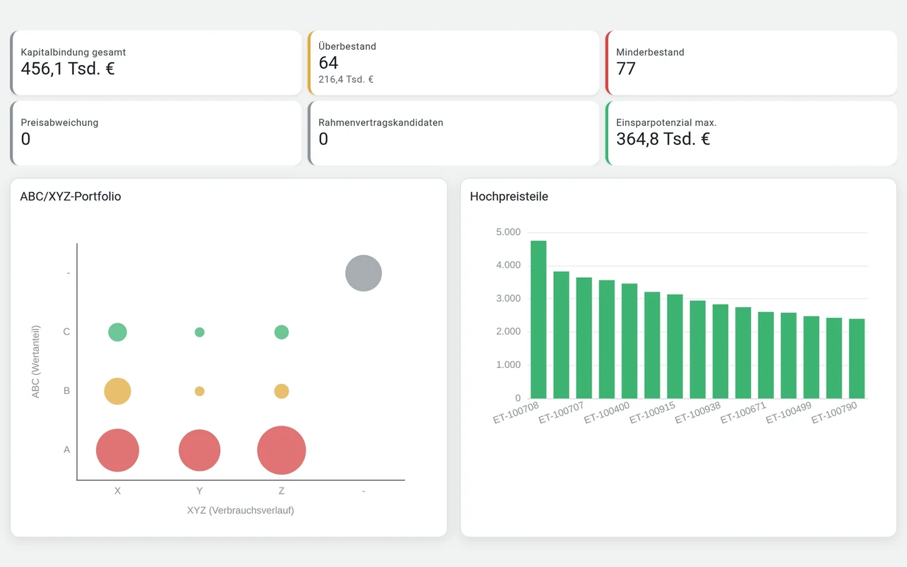
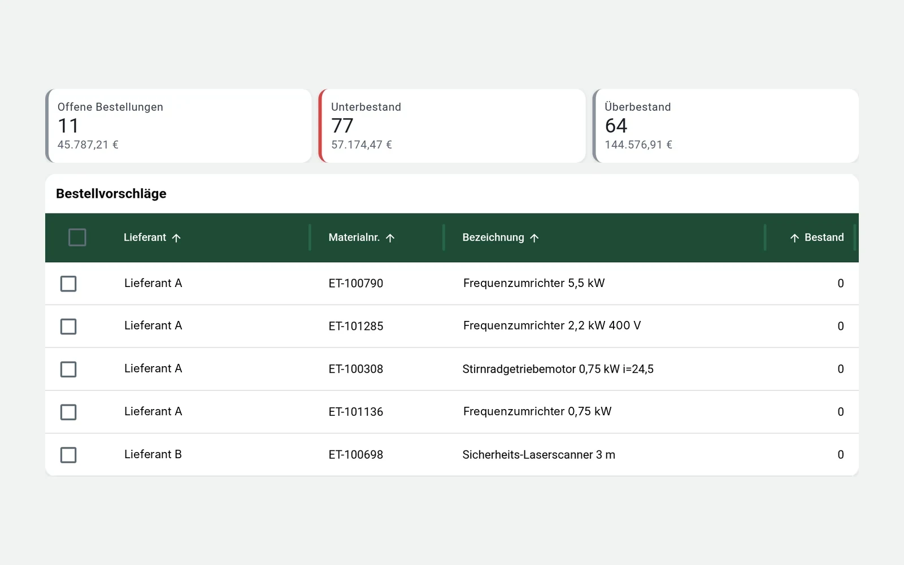

Material & Ersatzteile
Weniger Kapitalbindung. Mehr Versorgungssicherheit.
Zu viel Material bindet Geld. Zu wenig gefährdet den Betrieb. Wir bewerten Bestände, Daten und Beschaffung gemeinsam – und finden den wirtschaftlich sinnvollen Weg dazwischen.
Das Spannungsfeld
Zwei Risiken. Ein Ziel.
Überbestand und Fehlbestand entstehen oft im selben Lager. Beide kosten Geld – nur an unterschiedlichen Stellen.
Überbestand
Kapital gebunden.
- Material ohne Bewegung seit Jahren
- Dubletten unter verschiedenen Nummern
- Lagerkosten, Platz und Alterung
Der wirtschaftlich sinnvolle Bestand liegt dazwischen.
Fehlbestand
Stillstandsrisiko.
- Kritisches Teil fehlt im Störfall
- Lange Lieferzeit, keine Alternative
- Teure Eilbeschaffung
Was wir betrachten
Bestände bewerten statt nur zählen.
Mit WK SmartParts machen wir sichtbar, wo Risiken liegen und wo Kapital frei werden kann. Die Ansichten zeigen Beispieldaten.

Bestandsrisiko
Eine Ampel zeigt, welche Teile sicher versorgt sind, wo ein Risiko besteht und wo ein Stillstand möglich ist. Die Liste darunter ordnet den Handlungsbedarf.

ABC/XYZ
Wertanteil und Verbrauchsverlauf zeigen, welche Teile eng gesteuert werden sollten und wo eine einfache Disposition genügt.

Datenqualität
Fehlende Pflichtfelder, Hersteller, Preise und Lieferzeiten sowie Dubletten werden sichtbar. Ohne saubere Daten bleibt jede Planung ungenau.

Bestellvorschläge
Unterbestände werden nach Lieferant gebündelt. So entsteht ein nachvollziehbarer Vorschlag statt einer Bestellung aus dem Bauchgefühl.
Versorgung sichern
Nicht jedes Teil ist gleich wichtig.
Entscheidend ist, was ein fehlendes Teil im Betrieb auslöst. Deshalb verbinden wir Bestandsdaten mit Kritikalität, Lieferzeiten und möglichen Alternativen.
Kritikalität
Welche Anlage steht, wenn das Teil fehlt? Die Bewertung richtet sich nach der Auswirkung im Betrieb, nicht nach dem Preis.
Lieferzeiten
Lange Wiederbeschaffungszeiten und Single Source werden erkannt, bevor sie zum Engpass werden.
Alternativen
Wo das Original knapp ist, prüfen wir Alternativteile und zusätzliche Lieferanten.
Alternativteile & LieferantenLeistungen in diesem Bereich
- Datenbereinigung
- Bestandsoptimierung
- Alternativteilfindung
- Lieferantenfindung
- Obsoleszenzmanagement
Fachkontexte
Wir arbeiten mit Daten aus Ihren bestehenden Systemen, etwa aus SAP PM/MM, Maximo, Infor oder IFS. Der Schwerpunkt liegt auf Material- und Ersatzteildaten und den Abläufen dahinter.
Rechenbeispiel
Wie viel Kapital könnte in Ihrem Lager frei werden?
Ein grobes Rechenbeispiel mit Ihren eigenen Schätzwerten – kein Angebot und keine Zusage. Belastbare Zahlen liefert erst die Analyse Ihrer Daten.
- Kapital, das frei werden könnte
- 112.000 €
- Lagerkosten, die jährlich entfallen könnten
- 22.400 €
Rechnung: Lagerwert × Anteil ohne Bewegung × abbaubarer Anteil; Kosten mit dem gewählten Kostensatz. Die Startwerte sind Beispielwerte.
Lassen Sie uns ins Gespräch kommen
Wissen Sie, wie viel Kapital in Ihrem Lager gebunden ist?
Der Quick-Check mit Schwerpunkt Material & Ersatzteile zeigt, wo Bestände zu hoch sind und wo Versorgungslücken drohen.
- Telefon+49 160 277 65 12
- E-Mailservice@werringloer.de
- StandortPeetzweg 46, 38228 Salzgitter